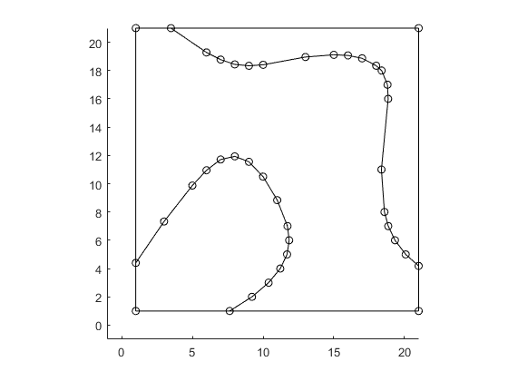

Meshing a 2D contour plot
Contents
Download Im2mesh package https://www.mathworks.com/matlabcentral/fileexchange/71772
Im2mesh package require Matlab Mapping toolbox
Before we start, please set folder "Im2mesh_Matlab" as your current folder of MATLAB.
Function bounds2mesh use a mesh generator called MESH2D (developed by Darren Engwirda). We can use the following command to add the folder 'mesh2d-master' to the path of MATLAB.
addpath(genpath('mesh2d-master'))
clear all
Case 1
Define Z, interested level, and outer boundary
Z = peaks; % Z is a 49-by-49 matrix containing the height values of % the surface with respect to the x-y plane. level = 1.5; % interested level % outer boundary xmin = 0; ymin = 5; xmax = 50; ymax = 55;
Plot surface
surf(Z)
Plot contour
contour(Z, [level,level]);
Store vertices in countour
C = contourc(Z, [level,level]);
contourCell = {}; % a cell array for vertices in countours
k = 1; % current column in C
while k < size(C,2)
nv = C(2,k); % number of vertices
idx = k+1 : k+nv; % columns that hold the vertices
xy = C(1:2,idx)'; % nv-by-2 array
contourCell{end+1} = xy;
k = k + nv + 1; % jump to next header
end
Plot contourCell
figure hold on; axis equal for i = 1: length(contourCell) plot( contourCell{i}(:,1), contourCell{i}(:,2) ) end hold off

Convert contourCell to polyshape object
x_temp = []; y_temp = []; for i = 1: length(contourCell) x_temp = [ x_temp; NaN; contourCell{i}(:,1) ]; y_temp = [ y_temp; NaN; contourCell{i}(:,2) ]; end psIn = polyshape( x_temp, y_temp );
Plot polyshape object
plot(psIn);
axis equal
Boolean operation
vertex = [xmin ymin; xmax ymin; xmax ymax; xmin ymax; xmin ymin]; psOB = polyshape(vertex); % polyshape for outer boundary psOB = subtract(psOB, psIn); figure hold on; axis equal plot(psOB); plot(psIn); hold off
Convert to a nested cell array of polygons
psCell = {psOB; psIn}; % a cell array of polyshape
bounds = polyshape2bound(psCell); % a nested cell array of polygons
tol_intersect = 1e-6;
bounds = addIntersectPnts( bounds, tol_intersect );
% plot polygons and show all vertices
plotBounds(bounds,false,'ko-')
Reduce the number of vertices
boundsNew = getCtrlPnts( bounds, false ); tolerance = 0.1; % For polyline simplification % This value will affect the final mesh size. % Increase tolerance, the min mesh size will increase. boundsNew = simplifyBounds( boundsNew, tolerance ); % show all vertices plotBounds(boundsNew,false,'ko-')
Generate mesh
hmax = 500;
grad_limit = 0.25;
opt = [];
opt.disp = inf; % silence verbosity
[vert,tria,tnum,vert2,tria2] = bounds2mesh( boundsNew, hmax, grad_limit, opt );
plotMeshes(vert,tria,tnum);
We could remove the mesh in the hole if we don't want it.
hmax = 500;
grad_limit = 0.25;
opt = [];
opt.disp = inf; % silence verbosity
[vert,tria,tnum,vert2,tria2] = bounds2mesh( boundsNew(1), hmax, grad_limit, opt );
plotMeshes(vert,tria,tnum);
Create matlab pde model object
% linear model model_linear = createpde(); geometryFromMesh( model_linear, vert', tria', tnum' ); % qudratic model model_quad = createpde(); geometryFromMesh( model_quad, vert2', tria2', tnum' );
Show geometry
pdegplot(model_quad, 'EdgeLabels','on','VertexLabels','on', 'FaceLabels','on' )
Show mesh
pdemesh( model_quad )
clear all
Case 2
Define Z, interested level, and outer boundary
n = -1:0.1:1; Z = peaks(n); % Z is a 21-by-21 matrix containing the height values of % the surface with respect to the x-y plane. level = 1.5; % interested level % outer boundary xmin = 1; ymin = 1; xmax = 21; ymax = 21;
Plot surface
surf(Z)
Plot contour
contour(Z, [level,level]);
Store vertices in countour
% add (-inf) padding to Z Z2 = padarray(Z,[1 1],-inf,'both'); C = contourc(Z2, [level,level]); contourCell = {}; % a cell array for vertices in countours k = 1; % current column in C while k < size(C,2) nv = C(2,k); % number of vertices idx = k+1 : k+nv; % columns that hold the vertices xy = C(1:2,idx)'; % nv-by-2 array contourCell{end+1} = xy -1 ; % -1 is used to removed padding k = k + nv + 1; % jump to next header end
Plot contourCell
figure hold on; axis equal for i = 1: length(contourCell) plot( contourCell{i}(:,1), contourCell{i}(:,2) ) end hold off
Convert contourCell to polyshape object
x_temp = []; y_temp = []; for i = 1: length(contourCell) x_temp = [ x_temp; NaN; contourCell{i}(:,1) ]; y_temp = [ y_temp; NaN; contourCell{i}(:,2) ]; end psIn = polyshape( x_temp, y_temp );
Warning: Polyshape has duplicate vertices, intersections, or other inconsistencies that may produce inaccurate or unexpected results. Input data has been modified to create a well-defined polyshape.
Plot polyshape object
plot(psIn);
axis equal
Boolean operation
vertex = [xmin ymin; xmax ymin; xmax ymax; xmin ymax; xmin ymin]; psOB = polyshape(vertex); % polyshape for outer boundary psOB = subtract(psOB, psIn); figure hold on; axis equal plot(psOB); plot(psIn); hold off
Convert to a nested cell array of polygons
psCell = {psOB; psIn}; % a cell array of polyshape
bounds = polyshape2bound(psCell); % a nested cell array of polygons
tol_intersect = 1e-6;
bounds = addIntersectPnts( bounds, tol_intersect );
% plot polygons and show all vertices
plotBounds(bounds,false,'ko-')
Reduce the number of vertices
boundsNew = getCtrlPnts( bounds, false ); tolerance = 0.1; % For polyline simplification % This value will affect the final mesh size. % Increase tolerance, the min mesh size will increase. boundsNew = simplifyBounds( boundsNew, tolerance ); % show all vertices plotBounds(boundsNew,false,'ko-')
Generate mesh
hmax = 500;
grad_limit = 0.25;
opt = [];
opt.disp = inf; % silence verbosity
[vert,tria,tnum,vert2,tria2] = bounds2mesh( boundsNew, hmax, grad_limit, opt );
plotMeshes(vert,tria,tnum);
 Create matlab pde model object
% linear model model_linear = createpde(); geometryFromMesh( model_linear, vert', tria', tnum' ); % qudratic model model_quad = createpde(); geometryFromMesh( model_quad, vert2', tria2', tnum' );
Show geometry
pdegplot(model_quad, 'EdgeLabels','on','VertexLabels','on', 'FaceLabels','on' )
Show mesh
pdemesh( model_quad )
end